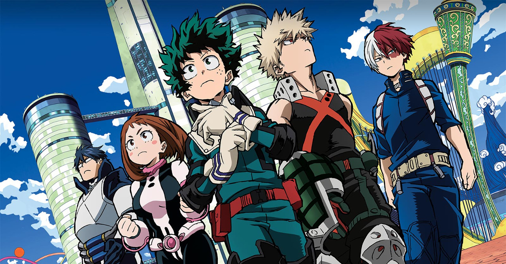

Sinopsis
Un chico sin poderes que, aunque nace en una sociedad en la que tener poderes especiales es de lo más normal, tiene su propio sueño de convertirse en un héroe que salve a las personas con una sonrisa en el rostro.
Tras enterarse de que el no puede desarrollar ningún tipo de Don y tras sufrir nuevamente el abuso de sus compañeros de clase, es atacado por un villano en forma de lodo que trata de poseer su cuerpo. Es ahí cuando Izuku conoce a All Might, su héroe favorito quien lo salva. No conforme con obtener el autógrafo de su superhéroe, Izuku descubrirá a base de "aferrarse", que ser héroe no es como se lo imaginaba.
